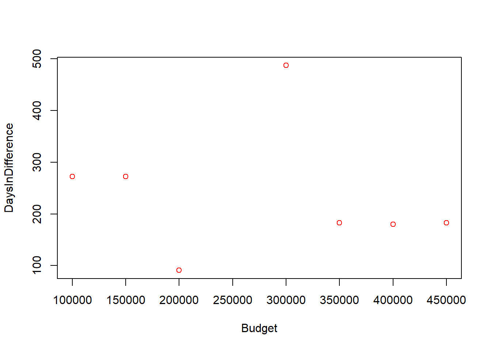

library(DBI)Warning: package 'DBI' was built under R version 4.3.2library(RSQLite)Warning: package 'RSQLite' was built under R version 4.3.2library(dplyr)Warning: package 'dplyr' was built under R version 4.3.2
Attaching package: 'dplyr'The following objects are masked from 'package:stats':
filter, lagThe following objects are masked from 'package:base':
intersect, setdiff, setequal, unionlibrary(lubridate)Warning: package 'lubridate' was built under R version 4.3.2
Attaching package: 'lubridate'The following objects are masked from 'package:base':
date, intersect, setdiff, unionlibrary(stringr)Warning: package 'stringr' was built under R version 4.3.2library(tidyverse)Warning: package 'tidyverse' was built under R version 4.3.2Warning: package 'ggplot2' was built under R version 4.3.2Warning: package 'tibble' was built under R version 4.3.2Warning: package 'tidyr' was built under R version 4.3.2Warning: package 'readr' was built under R version 4.3.2Warning: package 'purrr' was built under R version 4.3.2Warning: package 'forcats' was built under R version 4.3.2── Attaching core tidyverse packages ──────────────────────── tidyverse 2.0.0 ──
✔ forcats 1.0.0 ✔ readr 2.1.4
✔ ggplot2 3.4.4 ✔ tibble 3.2.1
✔ purrr 1.0.2 ✔ tidyr 1.3.0── Conflicts ────────────────────────────────────────── tidyverse_conflicts() ──
✖ dplyr::filter() masks stats::filter()
✖ dplyr::lag() masks stats::lag()
ℹ Use the conflicted package (<http://conflicted.r-lib.org/>) to force all conflicts to become errorsIcadb <- dbConnect(SQLite(), "ICA_2023.sqlite")
dbListTables(Icadb)[1] "Assets" "AssetsDevelopers" "Customers"
[4] "Developers" "ProjectDevelopers" "Projects"
[7] "ProjectsBudget" "Timelines" dbListFields(Icadb, "Projects")[1] "ProjectID" "ProjectName" "StartDate" "EndDate" "Budget"
[6] "Status" "CustomerID" Projects <- tbl(Icadb, "Projects")
projects_df <- collect(Projects)
projects_df2 <- collect(Projects)
Assets <- tbl(Icadb, "Assets")
assets_df <- collect(Assets)
Developers <- tbl(Icadb, "Developers")
developers_df <- collect(Developers)
Timelines <- tbl(Icadb, "Timelines")
timelines_df <- collect(Timelines)
Customers <- tbl(Icadb, "Customers")
Customers_df <- collect(Customers)
ProjectDevelopers <- tbl(Icadb, "ProjectDevelopers")
projectdevelopers_df <- collect(ProjectDevelopers)
projectdevelopers_df2 <- collect(ProjectDevelopers)
AssetsDevelopers <- tbl(Icadb, "AssetsDevelopers")
assetsdevelopers_df <- collect(AssetsDevelopers)
dbRemoveTable(Icadb, "ProjectsBudget")
dbExecute(Icadb, "CREATE Table ProjectsBudget AS
SELECT Budget, CustomerCountry
FROM Projects, Customers")[1] 0#dbReadTable(Icadb, "ProjectsBudget")
#A-1 Mostly working just not printing in correct order but the code is all there
ProjectsBudget_df <-inner_join( Customers_df, projects_df,
by = c("CustomerID"))
ProjectsBudget_df <- ProjectsBudget_df[,-c(2,3,5,7,8,10)]
ProjectsBudget_df <- ProjectsBudget_df[order(-ProjectsBudget_df$Budget),] # Should showcase the order correctly but it no longer does. This works before the summarise?
ProjectsBudget_df <- ProjectsBudget_df %>% group_by(CustomerCountry)
ProjectsBudget_df <- ProjectsBudget_df %>% arrange(desc(Budget))
ProjectsBudget_df <- ProjectsBudget_df %>% summarise(sum(Budget))
ProjectsBudget_df# A tibble: 6 × 2
CustomerCountry `sum(Budget)`
<chr> <int>
1 France 200000
2 Germany 150000
3 Italy 250000
4 Netherlands 400000
5 Spain 650000
6 UK 550000#A-2 I got the days between and I have the mean code there but this question would not cooperate with me at all
AssetsProjects_df <- inner_join(projects_df, assets_df,
by = c("ProjectID"))
AssetsProjects_df <-AssetsProjects_df[,-c(5,6,7,8,9,10)]
AssetsProjects_df <- AssetsProjects_df %>% group_by(ProjectID) %>% mutate(EndDate = ymd(EndDate),StartDate = ymd(StartDate)) %>% mutate(diff=as.numeric(difftime(EndDate, StartDate, units = "days"))) %>% mutate(meanDays = mean(diff)) Warning: There was 1 warning in `mutate()`.
ℹ In argument: `EndDate = ymd(EndDate)`.
ℹ In group 4: `ProjectID = 104`.
Caused by warning:
! 10 failed to parse.AssetsProjects_df# A tibble: 42 × 7
# Groups: ProjectID [4]
ProjectID ProjectName StartDate EndDate CreationDate diff meanDays
<int> <chr> <date> <date> <chr> <dbl> <dbl>
1 101 Galaxy Quest 2021-01-01 2021-09-30 2021-05-15 272 272
2 101 Galaxy Quest 2021-01-01 2021-09-30 2021-03-15 272 272
3 101 Galaxy Quest 2021-01-01 2021-09-30 2021-01-15 272 272
4 101 Galaxy Quest 2021-01-01 2021-09-30 2021-05-15 272 272
5 101 Galaxy Quest 2021-01-01 2021-09-30 2021-03-15 272 272
6 101 Galaxy Quest 2021-01-01 2021-09-30 2021-01-15 272 272
7 101 Galaxy Quest 2021-01-01 2021-09-30 2021-05-15 272 272
8 101 Galaxy Quest 2021-01-01 2021-09-30 2021-03-15 272 272
9 101 Galaxy Quest 2021-01-01 2021-09-30 2021-01-15 272 272
10 101 Galaxy Quest 2021-01-01 2021-09-30 2021-05-15 272 272
# ℹ 32 more rows#A-3 Going to create a table that adds projects and developers and where the project is completed it will print that out
status <- projects_df$Status
status[1] "Completed" "Completed" "Completed" "Completed" "In Progress"
[6] "Planned" "Planned" "Planned" ComStatus <- sum(str_count(status, "Completed"))
projectdevelopers_df <- projectdevelopers_df %>% mutate(Status = status) %>% group_by(DeveloperID) %>% summarize(DevComplete = ComStatus) %>% arrange(desc(ComStatus))
#I am not sure why they are all equal to 4 as I thought the group by would split it per case but This is the basics of How you would do this question
projectdevelopers_df <-projectdevelopers_df[1:3,] #This is how you select the top 3 values
projectdevelopers_df# A tibble: 3 × 2
DeveloperID DevComplete
<int> <int>
1 201 4
2 211 4
3 213 4# Custom SQL Query 1 = Select specific budget ranges from the project table
#Filter is the dplyr libraries version of Like and or according to multiple articles I read https://sebastiansauer.github.io/dplyr_filter/ and https://stackoverflow.com/questions/32829358/dplyr-filter-with-sql-like-wildcard
projects_df <- projects_df %>% filter(Budget > 200000) %>% filter(Budget < 350000)
projects_df# A tibble: 2 × 7
ProjectID ProjectName StartDate EndDate Budget Status CustomerID
<int> <chr> <chr> <chr> <int> <chr> <int>
1 104 Urban Adventure 2022-10-01 2023-02-31 250000 Completed 4
2 105 Ocean Odyssey 2023-03-01 2024-06-30 300000 In Progress 5#custom query 2: Select projectID and AssetID from asset table using the distinct function and the arrange which is dplyrs version of the SQL query DISTINCT and ORDER_BY Reference: https://sparkbyexamples.com/r-programming/dplyr-arrange-function-in-r/#:~:text=R%20arrange()%20Ascending%20Order,either%20ascending%20or%20descending%20order.
assets_df <- assets_df %>% distinct(assets_df, pick(contains("ID"))) %>% arrange(desc(AssetID)) %>% arrange(desc(ProjectID))
assets_df# A tibble: 42 × 5
AssetID ProjectID AssetName Type CreationDate
<int> <int> <chr> <chr> <chr>
1 39 104 Asset 39 Character Model 2021-04-15
2 35 104 Asset 35 Character Model 2021-06-15
3 31 104 Asset 31 3D Model 2021-02-15
4 27 104 Asset 27 UI Element 2021-04-15
5 23 104 Asset 23 Environment Design 2021-06-15
6 19 104 Asset 19 Texture 2021-02-15
7 15 104 Asset 15 Animation 2021-04-15
8 11 104 Asset 11 Sound 2021-06-15
9 7 104 Asset 7 Texture 2021-02-15
10 3 104 Asset 3 3D Model 2021-04-15
# ℹ 32 more rows#PART B-A:
#Setting up the data to be modelled.
projects_df2# A tibble: 8 × 7
ProjectID ProjectName StartDate EndDate Budget Status CustomerID
<int> <chr> <chr> <chr> <int> <chr> <int>
1 101 Galaxy Quest 2021-01-01 2021-09-30 100000 Completed 1
2 102 Mystic Realms 2021-10-01 2021-12-31 200000 Completed 2
3 103 Shadow Legacy 2022-01-01 2022-09-30 150000 Completed 3
4 104 Urban Adventure 2022-10-01 2023-02-31 250000 Completed 4
5 105 Ocean Odyssey 2023-03-01 2024-06-30 300000 In Progre… 5
6 106 Desert Survival 2024-07-01 2024-12-31 350000 Planned 6
7 107 Frozen Frontier 2025-01-01 2025-06-30 400000 Planned 7
8 108 Cybernetic Dreams 2025-07-01 2025-12-31 450000 Planned 8projects_df2 <- projects_df2[,-c(6,7)]
projects_df2 <- projects_df2 %>% mutate(StartDate = ymd(StartDate),EndDate = ymd(EndDate)) %>% mutate(DifferenceInDays = as.numeric(difftime(EndDate, StartDate, units = "days")))Warning: There was 1 warning in `mutate()`.
ℹ In argument: `EndDate = ymd(EndDate)`.
Caused by warning:
! 1 failed to parse.Budget <- projects_df2$Budget
DaysInDiff <- projects_df2$DifferenceInDays
Regression <- projects_df2 %>% lm(Budget ~ DifferenceInDays, data = .) %>% summary()
plot(Budget,DaysInDiff,col = "red",
abline(Regression),
xlab = "Budget", ylab = "DaysInDifference")Warning in abline(Regression): only using the first two of 8 regression
coefficients
#This should print the plot with the line along but it is not showcasing the line
#Part B-B
#Interpretting the regression model: It seems as though
#there is a corelation between the results of Budget
#and The days taken to create the fuill project in games development.
#There are twom major outliers where the two middle ground
#budgets actually take both the shortest and the longest
#amount of time out of all of the projects which is a fun
#little data observbation. It does apper as though the games
#with higher budgets get amde faster which may be because
#talent is getting paid more or because they have
#more resources to expend on the project
#Part B-C
# I know from looking at tutorials and other data pieces
# (source: https://www.youtube.com/watch?v=DY5xMgBQsOU
# and https://www.youtube.com/watch?v=-mGXnm0fHtI&t=634s)
# that the linear regression test is very reliable and
# good for data analytics but unfortunately I don't believe
# that I have done mine correctly as my line is not drawing
# on the graph. The data is all there when I rpint the
# summary but it is not showing on the plot which is
# incredibly frustrating. As I mentioned before that
# there are two massive outliers in my data as the two
# middle projects take the longest and shortest amounts
# of time in comparison to the budget which is a fun
# data fact that I thought was interesting.
#Part E: Quality and Conclusion
# Document Formatting
#I would like to quickly comment on the structure of the report. I feel like my report
#is structured well and it is easy to see what everything is as I have comments above
#each question to show what it is and explain a little bit of what it does. The tables
#themseleves are very clear as I only print out the nessesary values on each table for
#each question. I feel like the webpage itself is not formattted the best but I really
#tried my best and I just didn't really understand it.
# Suitability of Tables:
#This will be short as I feel like all of my tables hit all of the breifs points here and
#I see not issues with what I created in terms of the tables. They are all clear to read
#and shows the relvant data
# Suitability of Plots:
#I only use one plot in this project and I believe it is suitable for what I am attempting to do.
#The main issue with my plot is that the abline is not working correctly so i feel like I may
#have done the linear regression wrong even though I followed the linked tutorials and also
#created what I thought would be suitable data. It also appears as I am wrting this down that
#I misread the question and have used incorrect data instead of the team size but it is to
#late for me to go back and change it at this stage.
# Adherence to Best Practices in Coding and Data Visualization:
#I will keep this short. I believe that I manage to keep my code nice, neat and Ledgible.
# Conclusion and Reflection:
#In starting my conclusion i am going to emntion that I found this very hard. Much harder
# than I had anticipated and as such I have ended up having to leave out an entire section of
# the brief much to my own frustration. I have no idea why I struggled with this so much as I
# thought I had a good grasp of the concepts following the exam and the GCA both of which I belive
# I have done well in.
#
# I believe that I have done part A well and have answered most if not all the questions suffiecently
# Part B is up in the air as to wether any of the work is salvadgable. I believe that I was acting on
# sound logic after researching it online but I cannot know right now as it does not appear to be working.
#
# Despite my frustrations with this project There was a great feeling of accomplishment when I even
# got a question half working or when I troobleshot a line of code. This did make me feel good and
# that I may be able to figure this stuff out.
#
# Even though I admit I struggle with the module I do find it interesting and I do think that it has a space
# in the wider games development industry. As some of the queries show not only can it show you correlation
# between budgets and other factors it can also allow the developers to round up and analys feedback so much
# easier than without it. Using data Tables or even databases is very useful for finding out information like
# player data and preferences. It also can tell you the close relationship between factors that you might not
# even consider as a project planner or as a developer to a player feedback.
#
# Overall while I am furstrated with my result I feel like the rpoject was a good learning point for me as a
# person as I have started to learn a skill in rsql and data analyasis and even if I am not good at it now
# with time and practise I can always imrpove.